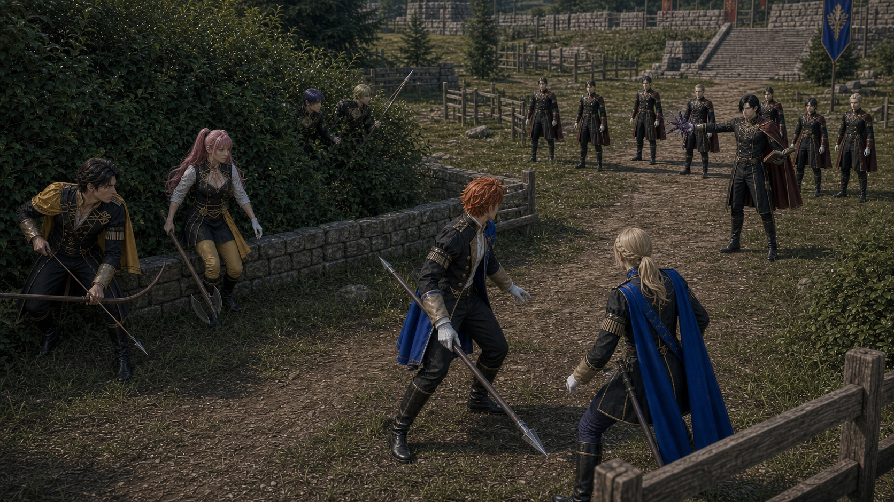

P0 Scene09 Reference Board
Index
镜头032E：贝雷特利用混战空隙
第一次三方局部混战
Generated Keyframe

Character Reference Assets

Sylvain
red-orange-haired lancer, draws flank pressure and turns serious under threat
assets/characters/blue_lions/Sylvain/academy/selected.png
Ingrid
blonde disciplined lancer, precise side entry and teacher-platform cut-off
assets/characters/blue_lions/Ingrid/academy/selected.png
Hilda
pink-haired axe student, flank pressure from thicket cover
assets/characters/golden_deer/Hilda/academy/selected.png
Hubert
dark-haired Black Eagles mage, pressure caster behind front line
assets/characters/black_eagles/Hubert/academy/selected.pngSubframes
分镜点 A：黑鹫横向转移
The Blue Lions push forces the Black Eagles to move laterally out of their original clean formation.
episodes/EP02/generated/mock_battle_production_keyframes_2026-07-17/Shot032E_A_keyframe.png
分镜点 B：金鹿掩护被压缩
That sideways movement eats into Claude and Hilda's safe thicket shooting space.
episodes/EP02/generated/mock_battle_production_keyframes_2026-07-17/Shot032E_B_keyframe.png
分镜点 C：首次缠斗
Blue Lions flank holders, Black Eagles mobile pressure, and Golden Deer side group collide around adjacent barriers.
episodes/EP02/generated/mock_battle_production_keyframes_2026-07-17/Shot032E_C_keyframe.png
分镜点 D：混战关系仍清晰
The frame keeps two nearby battle lines readable instead of making a single crowd pile.
episodes/EP02/generated/mock_battle_production_keyframes_2026-07-17/Shot032E_D_keyframe.png
Production Prompt
Create a production-ready cinematic live-action storyboard keyframe for EP02 Scene09 mock battle, Shot032E First Three-Way Entanglement.
Current script beat: 第一次三方局部混战.
Frame content: first local three-way entanglement among low walls and wooden barriers; Hilda leaves cover, Ingrid blocks, Black Eagles mobile pressure enters.
Characters and identity locks: Sylvain red-orange-haired academy student, relaxed spear posture, charm dropping when pressure rises; Ingrid blond disciplined lance student, precise knightly movement; Hilda pink-haired Golden Deer axe student, deceptively casual power, leaves cover under pressure; Hubert severe black-haired mage, dark magic pressure, shadowlike presence behind Edelgard.
The setting is the canon-inspired Garreg Mach outdoor mock battle field: one continuous tactical map with grass, low stone walls, wooden barriers, thickets, stone steps, and a northeast raised heal-tile platform. It must not look like a small training yard or isolated sparring ring.
Use wooden or blunted academy training weapons, controlled nonlethal contact, no blood, no serious injury. Make the frame readable as a movie storyboard still that can guide AI video generation: clear geography, character blocking, screen direction, and the peak tactical action.
Camera: Blue Lions pressure forces Black Eagles to adjust laterally; that movement squeezes the Golden Deer safe shooting zone. Hilda leaves cover, Ingrid blocks, a Black Eagles mobile student cuts in, and Sylvain turns between both threats. This is the first real local three-way entanglement among obstacles..
Style: photorealistic live-action, 16:9 cinematic frame, natural daylight, youthful academy students, identity-locked faces and costumes, no UI.
Character asset reference requirement:
- Sylvain: assets/characters/blue_lions/Sylvain/academy/selected.png; red-orange-haired lancer, draws flank pressure and turns serious under threat
- Ingrid: assets/characters/blue_lions/Ingrid/academy/selected.png; blonde disciplined lancer, precise side entry and teacher-platform cut-off
- Hilda: assets/characters/golden_deer/Hilda/academy/selected.png; pink-haired axe student, flank pressure from thicket cover
- Hubert: assets/characters/black_eagles/Hubert/academy/selected.png; dark-haired Black Eagles mage, pressure caster behind front line
The generated face, hairstyle, age impression, costume silhouette, and color accents must remain continuous with these selected.png assets across all subframes.